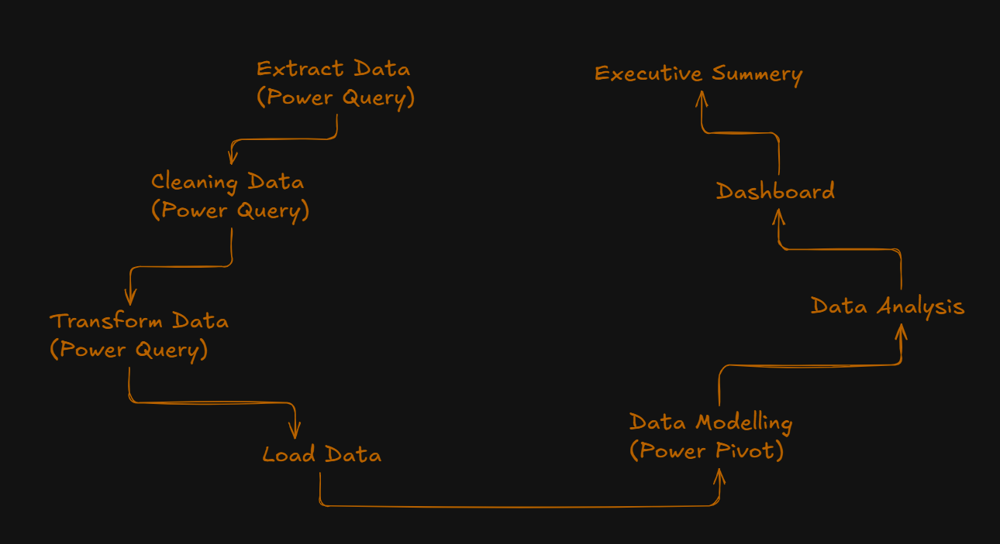

F&P-sales-analysis-with-excel
Project Description
This project analyzes sales data from Ferns and Petals (FNP), a gifting company catering to occasions like Raksha Bandhan, Diwali, Holi, and more. The dataset includes information on orders, products, delivery dates, locations, and revenue.
A dashboard was developed to uncover key insights into customer behavior, product performance, and sales trends. The goal is to support strategic decision-making through data-driven analysis across time, location, and occasion.
Project Goals
- ✔ Identify the total revenue generated during the analysis period.
- ✔ Calculate the average time taken between order placement and delivery.
- ✔ Analyze monthly sales trends to understand seasonal performance.
- ✔ Determine the top revenue-generating products.
- ✔ Assess average customer spending per order.
- ✔ Track revenue performance of the top five products.
- ✔ Identify the top 10 cities based on the number of orders placed.
- ✔ Evaluate the correlation between order quantity and delivery time.
- ✔ Compare revenue generated across different gifting occasions.
- ✔ Identify the most popular products for each occasion.
Project Evaluation
Project Diagram
Sales Performance Overview
Total Revenue: ₹3,520,984
Average Order Value: ₹3,520.98
Average Delivery Time (TTD): 5.53 days
Correlation between Order Quantity and Delivery Time: 0.0035
This indicates an almost negligible relationship between the quantity of items ordered and the number of days taken for delivery.
Monthly Revenue Trend
April (₹140,393) and July (₹135,826) saw the lowest revenue, suggesting potential areas for improvement or strategic promotion.
Occasion-Wise Revenue Analysis
Occasions such as Diwali (₹313,783) and Valentine's Day (₹331,930) performed relatively lower in comparison.
Top Performing Products
Other notable contributors include Quia Gift (₹114,476), Dolores Gift (₹106,624), and Harum Pack (₹101,556).
Category-Wise Performance
Soft Toys and Sweets followed, generating ₹740,831 and ₹733,842 respectively.
Other categories such as Cake, Mugs, and Plants had comparatively moderate performance.
City-Wise Order Distribution
Cities like Haridwar, Bidhannagar, and Dibrugarh also demonstrated strong engagement, with 20+ orders each.
Hourly Order Patterns
The early morning hours (0–3 AM) showed the least activity, indicating low consumer engagement during those times.